Практичні курси · журнал «ДентАрт» 2013 №3 (72)
Естетика тимчасових зубів: фантазія чи реальність?
ESTHETICS OF TEMPORARY TEETH: IS IT FANTASY OR REALITY?
Тимчасові зуби — унікальне творіння природи. В їх численних латинських назвах відбилися головні властивості і ставлення до цих анатомічних утворень: decidui — ті, що опадають, випадають; primarii — перші; temporarii — тимчасові; lactei — молочні; infantilis — дитячі, сadunt — випадні. Тимчасові зуби нерідко породжували помилки, іноді досить живучі. Мабуть, найперша відома з них — це помилка великого Гіппократа, який, згідно з існуючою думкою, дав їм назву «молочні», будучи упевненим, що вони формуються з молока матері. Назва, породжена помилкою генія, збереглася за тимчасовими зубами назавжди, незважаючи на спроби сучасної анатомічної номенклатури, прийнятої Федеральним комітетом анатомічної термінології (FCAT) у 1997 р. в Сан-Паулу (Бразилія), підкреслити їх очевиднішу властивість — тимчасовість.1 Великий анатом пізнього Середньовіччя Андреас Везалій вважав тимчасові зуби простими придатками постійних, що не мають коренів2 (помилка Везалія також виявилася надзвичайно стійкою — її ось уже багато століть наполегливо сповідують батьки маленьких дітей, для яких досі одкровенням залишається наявність коренів у тимчасових зубах і необхідність їх ендодонтичного лікування за наявності показань).
Упродовж досить тривалого часу молочні зуби привертали до себе увагу лікарів лише у разі їх ускладненого прорізування, за якого пропонувалося використання найрізноманітніших засобів.2 Після більш-менш благополучного прорізування тимчасових зубів про них забували, як, щоправда, і про самих маленьких дітей середньовічної Європи. Про це — твердження відомого французького медієвіста Жака ле Гоффа/Jacques Le Goff, автора книги «Цивілізація середньовічного Заходу»: «Та й чи були діти на середньовічному Заході?... Прагматичне Середньовіччя ледве помічало дитину, не маючи часу ні розчулюватися, ні захоплюватися нею».
Еволюція зображень дитячих облич на полотнах художників підтверджує думку вченого. Зображення маленького Христа і міфологічних малюків набули реальних рис живих осіб лише на прекрасних полотнах Леонардо да Вінчі, Рафаеля, Боттічеллі, Тіціана на рубежі XV і XVI століть (мал. 1-4). Перші боязкі напівусмішки на зображеннях дитячих лиць з'явилися в XVI-XVII століттях (мал. 5-7), набуваючи все більшої безпосередності та індивідуальності, усе більше віддаляючись від зразка «маленького дорослого», такого типового для періоду становлення жанру портретного живопису.
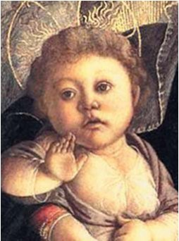
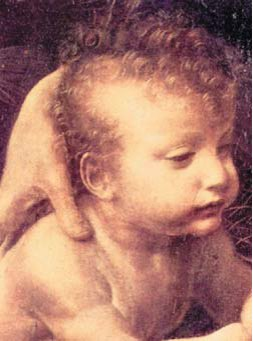
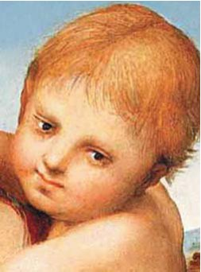
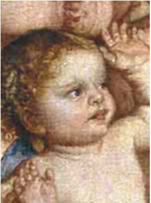
XVIII століття — час «відкриття» та ідеалізації дитинства, час захоплених текстів Жан-Жака Руссо: «Любіть дитинство; заохочуйте його ігри, його забави, його милий інстинкт. Хто з вас не жалкував іноді за цим віком, коли на губах вічно сміх, а на душі завжди мир?»; час усміхнених дітей, що бавляться, на полотнах видатних художників (мал. 8-9), час звернення мистецтва до естетики дитячого обличчя в усій її багатогранності і несхожості на дорослий велемудрий світ. XIX століття і початок XX — пора пастельних картин з молочними зубами, що виблискують в оправі дитячих усмішок (мал. 10-12), час вікторіанського стилю і виготовлення прикрас, інкрустованих молочними зубами вінценосних нащадків, що донині зберігаються в королівській колекції Британії (фото 1 а, б).
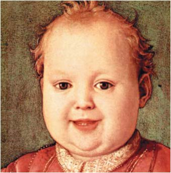
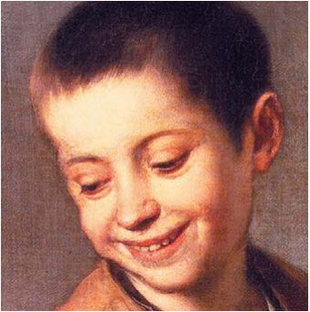
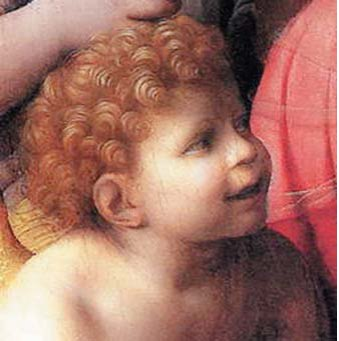
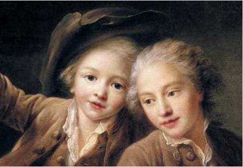
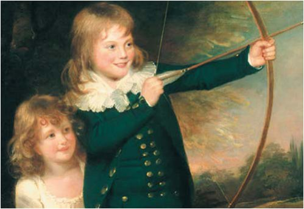
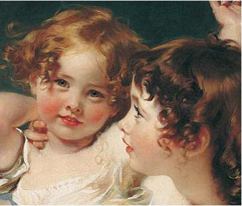
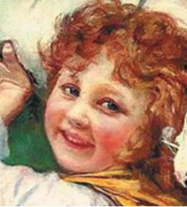
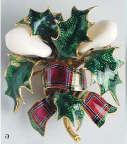
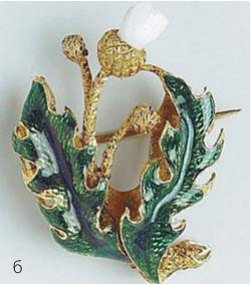
Стоматологія XIX століття, натхнена створенням першої механічної бормашини (за словами В. Д. Міллера/W. D. Miller — інструмента, «досконалішого від якого для операцій на зубах і частково також на щелепах навряд чи можна собі уявити»),4 маси нових пломбувальних матеріалів; стоматологія, яка вже спрямувала свій погляд у напрямку естетичних аспектів, нарешті звернула увагу на тимчасові зуби як на об'єкт, гідний окремої уваги і специфічних підходів фахівців зуболікування. «Питання про те, чи слід намагатися зберегти каріозні молочні зуби за допомогою пломбування, має бути вирішене у безумовно позитивному сенсі, зважаючи на важливе функціональне їх значення і серйозність розладів, обумовлюваних їхнім хворобливим станом» (В. Д. Міллер, 1898 р.).4
Якщо в мистецтві питання естетики дитячого обличчя, органічною складовою якої є естетика зубів, до ХХ століття було поставлене на належний рівень, то в стоматології питання естетики тимчасових зубів вирішувалося далеко не так однозначно. Підходи до лікування в дитячій стоматології пройшли довгий шлях, його віхами були: ігнорування тимчасових зубів і їх захворювань, їх безумовне видалення, збереження зруйнованих коренів, їх сріблення, сріблення каріозних порожнин зі створенням такої типової для певного періоду історії «чорнозубої» дитячої усмішки, відновлення коронок тимчасових зубів цементами, амальгамою. І нарешті, дитяча стоматологія почала використовувати матеріали, здатні більш наближено імітувати зовнішній вигляд тканин зуба, і досягла рівня повноцінних естетичних реставрацій у дітей.
Відома думка, що рівень цивілізованості суспільства виявляється його ставленням до дітей і людей похилого віку. Сьогодні ми говоримо не лише про необхідність лікування хвороби, усунення болю і відновлення функції тимчасового прикусу, але також про збереження і підтримку на гідному рівні якості життя дитини, що є не менш важливим завданням, ніж збереження якості життя дорослого. Якість життя включає задоволення естетичних потреб дитини, її адекватну самооцінку, невід'ємною частиною якої є уважне ставлення до зовнішності і естетики обличчя. Що може запропонувати сучасна стоматологія для естетичного відновлення коронок тимчасових зубів?
А. Склоіономерні цементи, переважно гібридні, які мають, окрім профілактичних властивостей і хімічної адгезії, цілком задовільні естетичні якості у поєднанні з нескладністю використання, що важливо, враховуючи непосидючість маленьких пацієнтів.
Б. Композитні матеріали, які мають унікальну здатність імітувати натуральні зубні тканини з точки зору як функції, так і естетики. Низка умов, за яких вимушений працювати дитячий стоматолог, накладає свій відбиток на застосування композитних матеріалів для реставрації тимчасових зубів. Результати проведених нами експериментальних і клінічних досліджень, що стосуються морфології протравленої емалі тимчасових зубів (фото 2 а, б, в) і особливостей застосування адгезивних систем різних поколінь,5, 6 дозволили узагальнити умови застосування композитних матеріалів у тимчасових зубах.
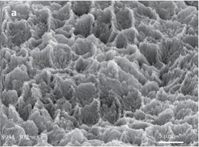
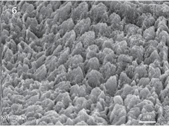
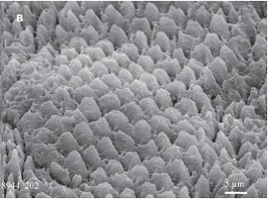
Умови ці такі:
- Період стабілізації кореня, який є непрямим критерієм зрілості емалі, що дозволяє розраховувати на адекватні наслідки дії на неї протравлювальної кислоти. У разі пріоритету естетики не виключається застосування композитних реставрацій у період резорбції кореня.
- Переважно хронічний перебіг карієсу, гіпоплазія емалі, депульповані зуби — тобто ті ситуації, що певною мірою виключають припущення про низьку кислотостійкість емалі, яка властива для гострого перебігу карієсу і ставить під сумнів можливість створення достатньої ретенційної поверхні після кислотного протравлювання.
- Адекватна поведінка дитини — умова, яка, мабуть, найчастіше перешкоджає застосуванню класичної композитної реставрації у тимчасовому прикусі. Посидючість у стоматологічному кріслі — далеко не та жертва, яку дитина може принести заради краси.
- Можливість якісної ізоляції операційного поля — умова, безпосередньо пов'язана з попередньою. Далеко не завжди дитячий стоматолог зможе повторити хрестоматійні ілюстрації з європейських і американських підручників, що фіксують дворічних дітей у рабердамі перед герметизацією тимчасових молярів.
- Щадне чищення зуба. Невисокий рівень мінералізації емалі тимчасових зубів не дозволяє використати абразивні пасти для професійного їх очищення, нерідко доводиться задовольнятися навіть звичайною гігієнічною пастою без фториду.
- Препарування до здорового дентину, здатного забезпечити якісну мікромеханічну ретенцію при використанні сучасних адгезивних систем.
- Застосування сендвіч-техніки або прокладок — те, до чого нерідко доводиться вдаватися при неможливості виконання попереднього пункту.
- У багатьох випадках доцільне застосування самопротравлюючих адгезивних систем, більш ергономічних, менш трудомістких і вимогливих до стану тканин зуба, ніж адгезивні системи 4-го і 5-го поколінь. Наші клінічні дослідження в динаміці продемонстрували вищу якість адгезії композитних матеріалів до твердих тканин тимчасових зубів із застосуванням багатокрокових адгезивних систем 4-го і 5-го поколінь, проте в дитячій стоматології нерідко доводиться надавати перевагу більш ергономічним методам: «Залежно від терпіння пацієнта доводиться присвячувати пломбуванню більше або менше уваги, хоча завжди необхідно пам'ятати, що операція має бути виконана якомога швидше» (В. Д. Міллер, 1898 р.).4
- Спрощення техніки. Як правило, воно полягає у збільшенні товщини шарів композитного матеріалу до максимально допустимої згідно з інструкцією для прискорення роботи, використанні одноколірної техніки (що, як правило, не відбивається на естетичних властивостях остаточної реставрації, враховуючи природну опаковість емалі тимчасових зубів). Загальноприйнятним у світі є спосіб композитної реставрації тимчасових зубів із застосуванням преформованих знімних целулоїдних ковпачків, що значно прискорює і спрощує реставрацію. Відсутність ковпачків для тимчасових зубів на стоматологічному ринку України спонукає стоматологів вдаватися до їх індивідуального виготовлення за допомогою різних методик.7 Залишається тільки сподіватися, що подальший розвиток українського стоматологічного ринку дозволить дитячим стоматологам відійти від проблеми чергового винаходу велосипеда.
- Постпломбувальна ремінералізація і бездоганна індивідуальна гігієна порожнини рота, що забезпечують довговічність реставрації і її якісну крайову адаптацію.
- Етапність лікування. У 2009 році Американська Академія Дитячої Стоматології (American Academy of Pediatric Dentistry — AAPD) запропонувала метод так званого «тимчасового терапевтичного відновлення» (interim therapeutic restoration — ITR).8 Суть концепції полягає в тому, що у разі, коли певні обставини не дозволяють здійснити традиційне препарування каріозної порожнини і виконання остаточних реставрацій (чи якщо перед виконанням остаточної реставрації бажане досягнення контролю над каріозною хворобою), може виконуватися тимчасове відновлення зубів склоіономерними цементами після щадного препарування з подальшим (через певний час) виконанням остаточної реставрації естетичним матеріалом. Таким чином, етапність лікування, зокрема метод ITR, дозволяє запобігти подальшому руйнуванню зубів у маленьких дітей, знизити рівень карієсогенних мікроорганізмів і створити передумови для естетичного відновлення тимчасових зубів.6
При дотриманні усіх зазначених умов композитні реставрації тимчасових зубів успішно служать упродовж усього їх життя, забезпечуючи повноцінне функціонування тимчасового прикусу і належну естетику (фото 3 а, б, в).
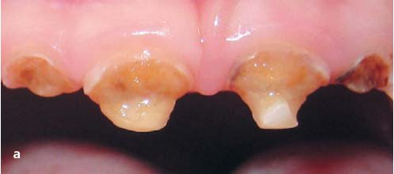

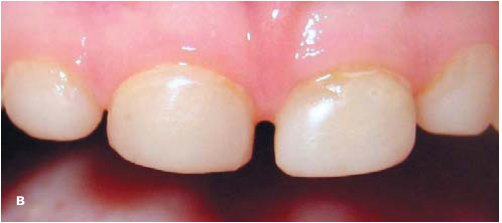
В. Компомери. Умови виконання компомерних реставрацій співпадають з такими щодо застосування композитів, бо названий клас матеріалів з великою підставою можна віднести саме до композитів, а не до склоіономерних цементів. Перевагою цих матеріалів стосовно дитячої стоматології є гарна якість адгезії із самопротравлюючими адгезивними системами, що не завжди справедливо щодо композитних матеріалів, а також виділення фториду. Своєрідним напрямом естетики реставрації тимчасових зубів є застосування кольорових компомерів — напрям, що не повертає природного вигляду тимчасовим зубам, але нерідко підвищує мотивацію дитини до отримання такої реставрації (фото 4 а, б).
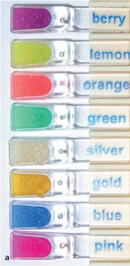
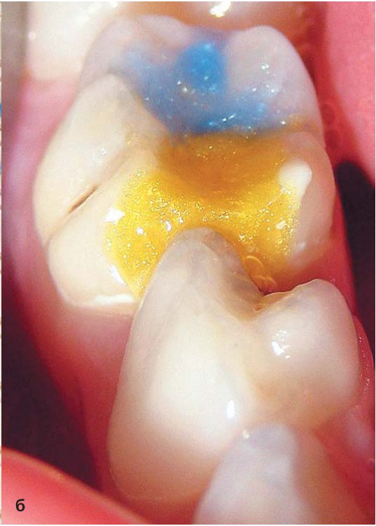
Г. Штучні коронки. Підпис під ілюстрацією з Медичного центру Крейтонского університету (фото 5) свідчить: «негарно, зате надійно». Безумовно, використання стандартних металевих коронок, що випускаються сьогодні різними виробниками стоматологічної продукції (фото 6), зовсім не вирішує естетичних проблем у фронтальній ділянці тимчасового прикусу — вони більше призначені для відновлення функції тимчасових молярів (фото 7).
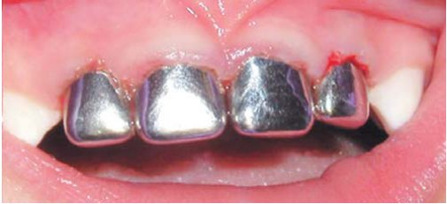
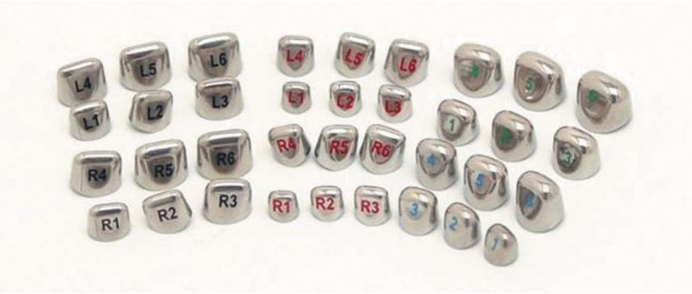
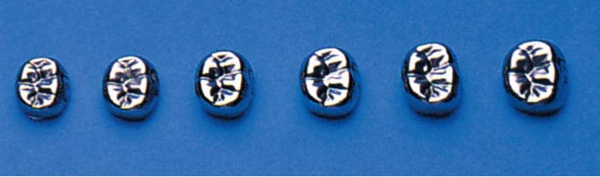
Випилювання і заповнення композитним матеріалом фронтальних «віконець» в зафіксованих на тимчасових різцях коронках не забезпечило достатньою мірою їх естетичності, але цього вдалося досягти створенням стандартних металевих коронок з облицюванням НюСмайл (NuSmile) (фото 8). У 2009 році з'явилися цирконієві коронки для тимчасових зубів (фото 9). Відновлення естетики тимчасових різців певною мірою забезпечує також використання полікарбонатних коронок відповідних розмірів. Відсутність стандартних коронок для тимчасових зубів на стоматологічному ринку України спонукає дитячих стоматологів звертатися до ортодонтів для виготовлення індивідуальних коронок.
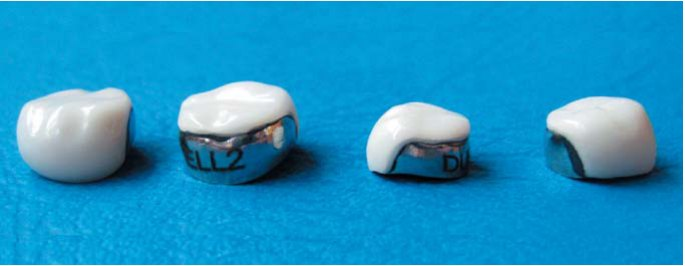
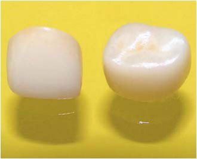
І останнє, але, однак, найважливіше. Застосування будь-якого способу естетичного відновлення тимчасових зубів ефективне і довговічне лише за умови виконання низки профілактичних заходів, спрямованих на збереження стоматологічного здоров'я дитини.
Профілактична програма повинна включати:
- оцінку чинників ризику розвитку стоматологічних захворювань і їх усунення;
- корекцію харчування і поведінки, що сприяють порушенню стоматологічного здоров'я;
- раціональну гігієну порожнини рота;
- професійне очищення зубів;
- ендогенну профілактику карієсу за показаннями;
- місцеве застосування фторидів і мінералізуючих складів;
- герметизацію фісур і сліпих ямок тимчасових молярів;
- підтримка стоматологічного здоров'я батьків для зменшення вірогідності масової передачі карієсогенної мікрофлори дітям.
При виконанні вказаних умов естетична реставрація тимчасових зубів може бути довговічною і ефективною. Але головне полягає в тому, що тільки профілактика здатна забезпечити найвищий рівень естетики в тимчасовому прикусі — естетику здорових тимчасових зубів, що не вимагають реставрації.
Література
- Международная анатомическая номенклатура / Под редакцией И. И. Бобрика, В. Г. Ковешникова. — К.: Здоров’я. —2001. —328 с.
- Попов С.С. История мировой стоматологии: мифы, легенды, реальность. —Омск: ГУИПП «Омский дом печати». —2000. —288 с.
- Ле Гофф Ж. Цивилизация средневекового Запада: Пер. с фр. / Общ. ред. Ю. Л. Бессмертного. —М.: Издательская группа Прогресс, Прогресс-Академия. —1992. —376 с.
- Миллер В. Д. Руководство по терапевтической стоматологии (руководство консервативного зубоврачевания): Пер. с нем. —Н. Новгород: Изд-во НГМА. —1998. —360 с.
- Хоменко Л. А., Биденко Н. В., Саккас Х., Коваль А. Ю. Кислотное протравливание эмали временных зубов у детей // Современная стоматология. —2010. —№ 5. —С. 61-66.
- Хоменко Л. О., Біденко Н. В. Застосування методу тимчасового лікування карієсу зубів у дітей віком до трьох років // Современная стоматология. —2011. —№ 4. —С. 53-57.
- Хоменко Л. О., Біденко Н. В., Дорошенко Г. С., Дорошенко Д. О. Відновлення тимчасових різців із застосуванням індивідуально виготовлених ковпачків // Новини стоматології. —2007. —№ 1. —С. 17-23.
- Policy on interim therapeutic restorations (ITR) // HYPERLINK «javascript:AL_get(this,%20'jour',%20'Pediatr%20Dent.');» \o «Pediatric dentistry». Pediatr. Dent. —2008-2009. —Vol.30 (7 Suppl). —P. 38-39.